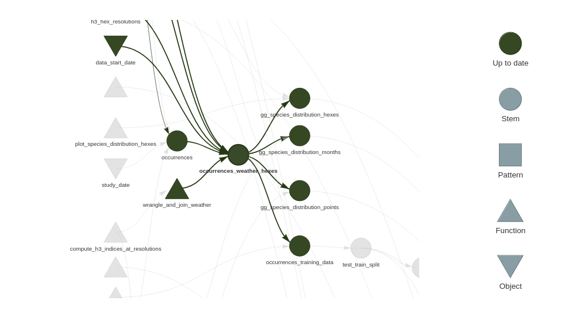
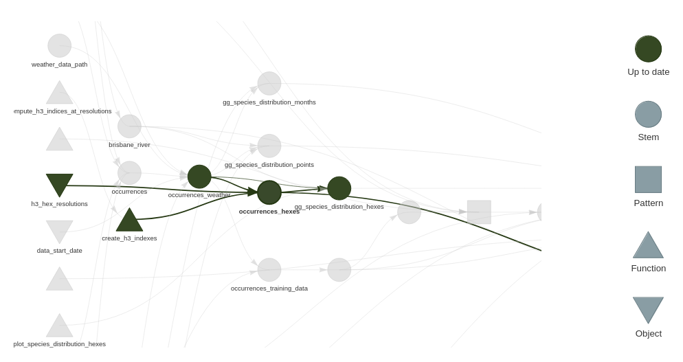

the_dataset <-
the_dataset |>
mutate( # or join, summarise, rbind, cbind etc.
# ...
)Long vs Wide processes
Within the example project there’s a bothersome little wrinkle. We call a helper function compute_h3_indices_at_resolutions() twice. This function is creating a set of spatial indices for our data. It’s a potentially expensive process on larger data, and ideally one we’d only perform once.
We call it:
- Once in
wrangle_and_join_weather()as part of the creation of our ‘clean’ dataset - Once in
plot_species_class_accuracy_hexes()to create a plot of classifier accuracy by hexagon.- We’re using the testing data for the model with validation metrics at that point and we dropped the spatial index when we created the training data.
What we could perhaps to instead is:
- Compute the spatial induces for our occurrences in a separate dataset
- Join them only when needed e.g. for the hex-binned plots.
But why did this wrinkle appear anyway?
In a classic staged script workflow datasets goes through a very linear path.
- There’s this kind of unspoken quest to build the perfect-one-true-clean dataset from which all analysis can flow.
- Columns get added and added, rarely removed.
- Datasets get quite wide.
- Often the binding name is reused each time:
- This style is what I am going to call a ‘long’ process.
{targets} long processes probably spend more CPU cycles than necessary. Why? -
- Small changes to a target possibly trigger a large number of other targets to be rebuilt. Since the target you changed has a huge chain of targets hanging off it.
Initially when users get started with {targets} there can be tendency to continue to pursue this pattern of long chains of data transformations which are represented as linear sequences of {targets}.
With {targets} we have the choice between:
- Minimising end to end running time of the plan
- As is usually the aim in the classic workflow
- Using ‘long’ processes
- Minimising total amount of running time of the plan ever
- By minimising dependencies between targets
- Using ‘wide’ processes
We’ll make our plan a little wider now by refactoring out the spatial index into a separate target.
Refactoring Steps
- Remove the this code from
wrangle_and_join_weather():
occurrences_weather_hexes <-
st_as_sf(
occurrences_weather,
coords = c("decimalLongitude", "decimalLatitude"),
remove = FALSE,
crs = first(occurrences$geodeticDatum)
) |>
mutate(
compute_h3_indices_at_resolutions(h3_hex_resolutions, geometry)
)
occurrences_weather_hexesand place it in a function that creates a dataset containing the spatial indices. We’ll need to refactor it a bit further in a minute.
tar_target(
occurrences_hexes,
create_h3_indexes(
occurrences_weather,
h3_hex_resolutions
)
)- Change the name of
occurrences_weather_hexestooccurrences_weather, since it now has nothing to do with hexes.
- Remove the
h3_hex_resolutionsargument fromwrangle_and_join_weather()- Change the name also where this dataset is input to other targets
- Add an
idcolumn tooccurrences_weatherinwrangle_and_join_weather()like:
occurrences_weather |>
mutate(id = seq(n()))- This will be a key for us to join to.
Return select the
idin theselect()increate_training_data()Change the model formulas in
fit_fold_calc_results()andfit_final_species_classification_model()fromscientificName ~ .toscientificName ~ . - idto exclude ourid.
- Actually changing the model formula in two places highlights we should probably break it out into its own target! Consider that an exercise left to the reader.
- Refactor
create_h3_indexesfurther to just returnidand the h3 indexes:
occurrences_hexes <-
st_as_sf(
occurrences_weather,
coords = c("decimalLongitude", "decimalLatitude"),
remove = FALSE,
crs = first(occurrences_weather$geodeticDatum)
) |>
mutate(
compute_h3_indices_at_resolutions(h3_hex_resolutions, geometry)
) |> st_drop_geometry() |>
select(
id,
starts_with("h3")
)
occurrences_hexes- To all the targets that start with
gg_and end withhexespass in ouroccurrences_hexestarget and join to the main dataset before plotting.
- E.g. in
plot_species_distribution_hexes()do this:
hex_occurrences <-
occurrences_weather |>
left_join(occurrences_hexes, by = "id") |> # the new bit
st_drop_geometry() |>
select(scientificName, h3_hex_8) |>
summarise(
count = n(),
.by = c("scientificName", "h3_hex_8")
) |>
mutate(
geometry = cell_to_polygon(h3_hex_8)
) |>
st_as_sf()
# plot stuff follows- In
gg_species_class_accuracy_hexes()remove theh3_hex_resolutionsargument and replace withoccurrences_hexes.
Replace this code:
model_validation_predictions_hex <-
species_model_validation_data |>
st_as_sf(
coords = c("decimalLongitude", "decimalLatitude"),
remove = FALSE,
crs = 4326
) |>
mutate(
compute_h3_indices_at_resolutions(h3_hex_resolutions, geometry)
) |>
st_drop_geometry()With this:
model_validation_predictions_hex <-
species_model_validation_data |>
left_join(occurrences_hexes, by = "id")- In
plot_species_distributions_points()we no longer have a spatial dataset. So have to make our data spatial for plotting:
occurrences_weather_points <-
occurrences_weather |>
st_as_sf(
coords = c("decimalLongitude", "decimalLatitude"),
remove = FALSE,
crs = first(occurrences_weather$geodeticDatum)
)
p <-
ggplot() +
geom_sf(
data = brisbane_river
) +
geom_sf(
data = occurrences_weather_points
) +
facet_wrap(~scientificName) +
theme_light() +
theme()
p- We’re re-converting to point geometry here.
- We could make a similar argument to hexes for another target
occurrences_pointsto be calculated and joined on as needed.- Where we calculate hexes
- Where we plot points
- Another exercise for the reader!
- We could make a similar argument to hexes for another target
The completed refactor is available on this branch of the example project
A wider angle
If we compare the network graphs before this refactor:

With the one post this refactor:

We can see occurrences_weather_hexes is less of a chokepoint, and that the modeling branch of the pipeline no longer depends on the spatial indices.
Review
When working with targets {targets} you have a new criteria to optimise for: minimise the lengths of dependency chains.
- ‘Widening’ your process will lower overall total running time, since you can make best re-use of work saved in the store.
- Using this strategy some things that were annoyingly slow in a linear pipeline are less important to optimise.
- Code might be slow, but it hardly ever runs!
- For
{tidyverse}users{targets}enables you to ‘have your cake and eat it too’.- E.g. Why bother with faster packages with more difficult syntax for code that hardly ever runs?
- Using this strategy some things that were annoyingly slow in a linear pipeline are less important to optimise.